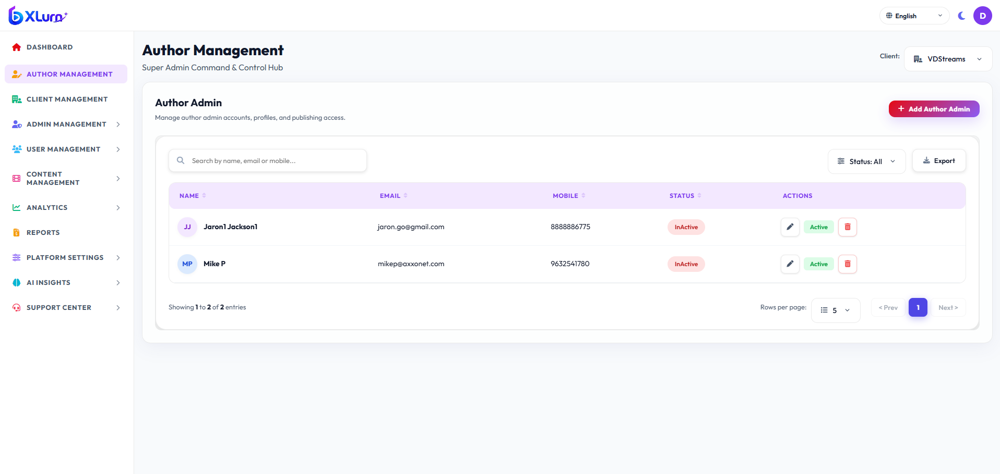
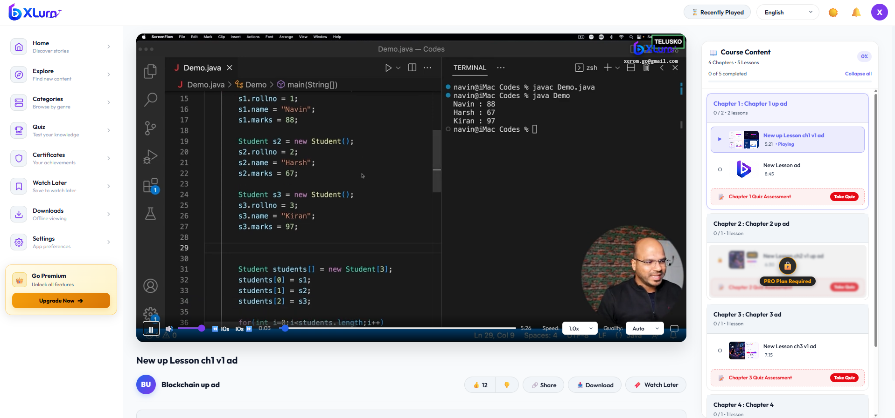
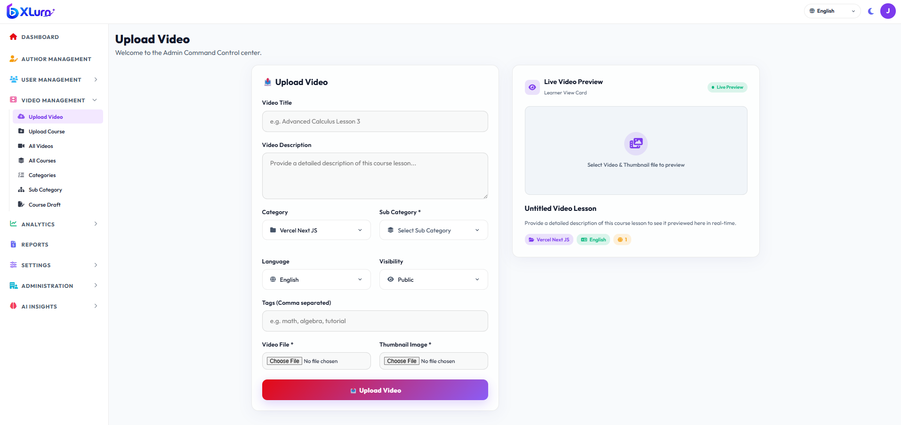
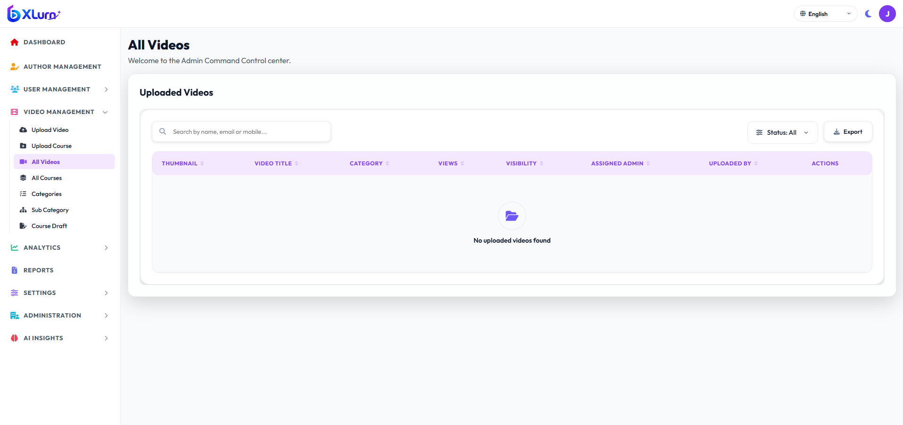
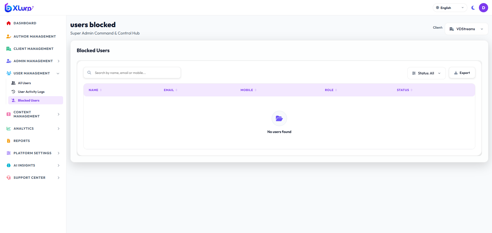
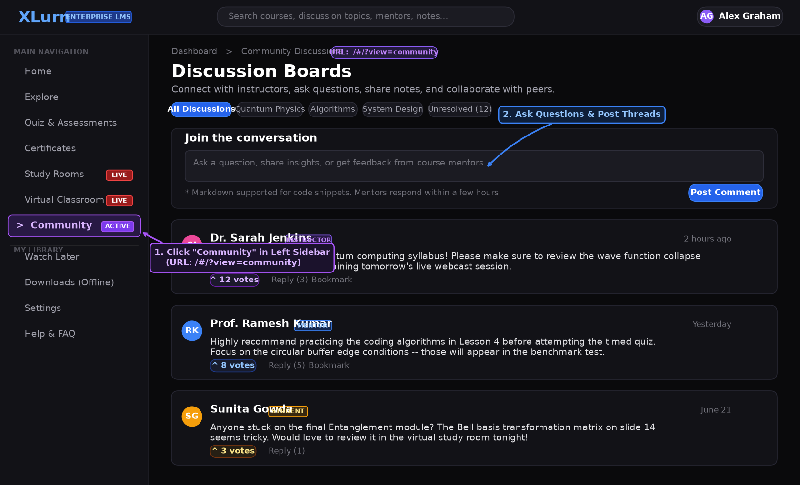
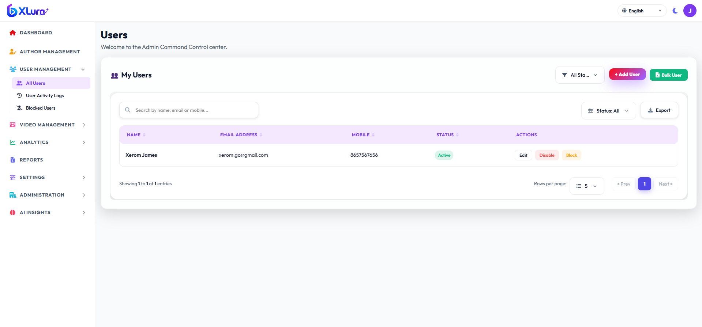
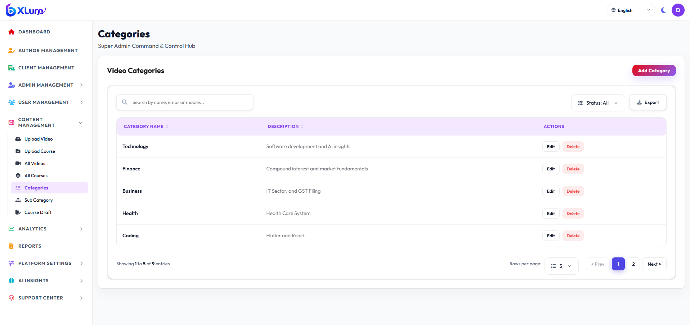
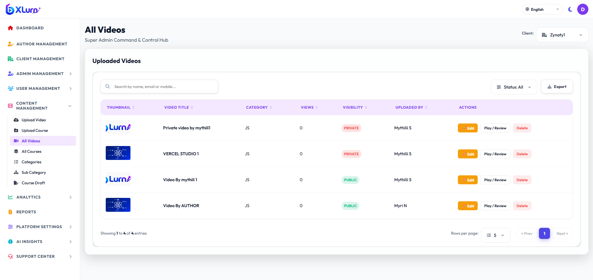

Comprehensive Learner (End-User) Portal User Manual & Operations Guide
🌐 Learner Web App v2.4🔒 RC4 & 2FA Secure🎓 Full Curriculum & Quizzes🔴 Virtual Classroom & Live Webcasts
1. Platform Overview & Key Capabilities
The XLurn User Portal (http://localhost:3001) is an enterprise-grade learning and video streaming web application designed for students, professionals, and corporate learners. It combines high-fidelity multi-resolution video delivery with synchronized multilingual transcripts, live interactive virtual classrooms, peer study rooms, automated assessments, and cryptographically verified completion certificates.
🎬 Adaptive Video Streaming
Switch dynamically between Auto, 1080p, 720p, and 480p with variable speeds (0.75x to 2.0x), dynamic watermarking, and smart timestamp resume.
🔴 Virtual Classroom
Participate in real-time instructor live webcasts with live polls, raise hand feature, attendee counters, and interactive class chat.
👥 Collaborative Study Rooms
Join or create peer study spaces with 6-character room codes, integrated focus timers, and group discussion tools.
💬 Multilingual Transcripts
Synchronized WebVTT closed captions and clickable, searchable transcripts available in English, Hindi (हिंदी), Kannada (ಕನ್ನಡ), and Telugu (తెలుగు).
🏆 Interactive Chapter Quizzes
Reinforce learning with end-of-chapter MCQs, True/False, and fill-in-the-blank questions featuring instant grading and pass/fail tracking.
📜 Verified Certificates
Earn and download authenticated PDF completion credentials complete with unique verification IDs upon passing course requirements.
2. Registration, Sign In & 6-Digit OTP Verification
XLurn provides enterprise-grade authentication with password hashing, RC4 encryption, and multi-factor 6-digit One-Time Password (OTP) verification.

Figure 2.1: Learner Sign In and Two-Factor 6-Digit OTP Verification Portal
Step 2.1: Creating a New Account (Sign Up)
Open the portal at http://localhost:3001/#/signup.
Fill in your Full Name, valid Email Address, Mobile Number, and strong Password.
Review your details and click Sign Up. Upon successful creation, you are automatically directed to sign in.
Step 2.2: Signing In to Your Account
Navigate to http://localhost:3001/#/login.
Type your registered Email Address and Password.
Click the Eye icon to toggle password visibility if needed, and check Remember Me to preserve your login session.
When Multi-Factor Authentication is triggered, the system automatically transitions into the dedicated OTP Verification view:
Six-Digit Box Inputs: Type the 6-digit numeric verification code sent to your registered email. The cursor automatically advances to each next input box as you type.
Full Code Paste Support: You can paste the entire 6-digit code into the first box from your clipboard—all 6 boxes will populate instantly.
120-Second Countdown Timer: An active timer counts down from 2:00 (120 seconds).
Resend OTP: If the timer reaches 0:00, the Resend OTP button activates, allowing you to generate and dispatch a fresh code.
Automatic Submission: As soon as the 6th digit is entered, the form validates automatically and logs you in without requiring extra clicks.
Return to Login: Click ← Back to Sign In at any point to cancel the OTP verification and return to credentials entry.
Step 2.4: Forgot & Reset Password
On the Sign In card, click Forgot Password?.
Enter your registered email address and click Send Reset Link / OTP.
Enter the received verification token, provide your New Password, confirm the password, and submit to restore account access.
⚠️ 10-Minute Cross-Tab Inactivity Guard: For security on shared or public workstations, if no keyboard, mouse, scroll, or touch interaction is detected across any active tab for 10 minutes, the session terminates automatically, logging you out and notifying you upon return.
3. Global Search & Top Navigation Bar
The persistent top header bar provides instantaneous search, playback shortcuts, language switching, and account profile controls.

Figure 3.1: Global Categorized Instant Search and Recently Played Navigation Bar
Instant Categorized Search (/ or Ctrl+K): Press / anywhere to open instant search.
Recent Searches & Popular Topics: Displays your search history with Clear controls and quick-launch tags (React, AI & Machine Learning, Quantum Computing).
Real-Time Live Grouping: Results sort into 🎓 Courses, 🎬 Lessons & Videos, 📄 Attached Resources/PDFs, and 🏷️ Categories.
Recently Played Dropdown: Click Recently Played to filter in-progress videos across Last 7 days, Last 1 month, or More than 1 month with completion percentage bars and instant resume.
Notifications Center (🔔): View real-time system alerts for new course publications and instructor updates.
Dark / Light Mode Toggle: Click the Sun / Moon icon to switch between Dark high-contrast and Light daytime viewing modes.
Multilingual Portal Switcher (🌐): Switch the entire interface between English (en), Hindi (हिंदी - hi), and Kannada (ಕನ್ನಡ - kn).
4. Sidebar Navigation & Discovery Hub
The collapsible left navigation drawer provides one-click navigation across all learning workspaces:
Navigation Item
Route / View
Feature Highlights
🏠 Home
/
Personalized hero banner, Continue Watching carousel, and top-rated categories.
🧭 Explore
/?view=explore
Trending lectures, newly added masterclasses, and popular community picks.
Official earned credentials with verified IDs and PDF download actions.
🔖 Watch Later
/?view=watch_later
Bookmarked video lessons saved for future focused study.
📑 Playlist
/?view=playlist
Custom personalized playlists organized by exam topic or specialty.
🕒 Watch History
/?view=watch_history
Full chronological playback log with completion percentages and timestamps.
📥 Downloads
/?view=downloads
Saved offline videos and course supplemental study PDFs.
⚙️ Settings
/?view=settings
User preferences, playback defaults, language, and notification toggles.
❓ Help & FAQ
/faq
Comprehensive self-service troubleshooting guides and answers.
5. Home Feed, Silent Hover Previews & Categories

Figure 5.1: Learner Home Feed with Featured Hero Spotlight and Continue Watching Carousel
Hero Spotlight & Continue Watching: Prominently highlights featured flagship courses. The Continue Watching shelf displays your exact playback progress so you can resume immediately.
YouTube-Style Silent Hover Video Previews: Hovering your mouse cursor over any video thumbnail starts a muted live preview right on the card, enabling fast visual skimming without opening the player.
Dynamic Category Filter Chips: Click any domain chip (All, Science, Technology, Finance, AI, Business, Coding) to filter the feed in real time.
Metadata Badges: Every card highlights instructor name, total run duration, difficulty level (Beginner, Intermediate, Advanced), view count, and lock status for premium content.

Figure 5.2: Category Filter Chips and Domain Catalog Exploration
6. Interactive Video Watch Room & Player
Opening any course or video lesson directs you to the Video Watch Room (#/watch/:id), featuring the primary playback theater on the left and the Curriculum Chapter Accordion on the right.

Figure 6.1: Video Watch Room with Anti-Piracy Watermark, Multi-Resolution Selector and Curriculum Accordion
⌨️ Custom Player Controls
Play/Pause via video canvas or Space, 10-second skip buttons (-10s / +10s), volume slider, and native Fullscreen mode.
⚡ Speed & Quality Switching
Choose playback speeds from 0.75x to 2.0x and resolutions from 480p, 720p, 1080p to Auto without losing timestamp position.
🛡️ Anti-Piracy Watermarking
Dynamic anti-piracy overlay projects the platform logo along with your logged-in email address across the video stream.
🔒 Free vs. Premium Locks
Private lessons feature a lock badge (🔒) on the Free plan. The player automatically skips locked lessons during auto-advance to preserve playback flow.
7. Subtitles, Transcripts & PDF Resources
Beneath the video player, three dedicated tabs enhance your study workflow:
7.1 Closed Captions (CC) & Multilingual Subtitles
Click the CC button on the player control bar to toggle captions on/off and switch between English, Hindi (हिंदी), Kannada (ಕನ್ನಡ), and Telugu (తెలుగు).
7.2 Synchronized Interactive Transcript
Live Highlighting & Auto-Scroll: Follows the speaker in real time by highlighting current sentences and auto-scrolling the transcript pane.
Click-to-Seek Navigation: Click any transcript sentence or timestamp to jump playback directly to that second.
In-Transcript Search: Search for spoken terms with instant highlight matching.
One-Click Copy: Click Copy Transcript to copy the entire lecture text for study notes.
7.3 Supplemental Resources & In-App PDF Previewer
Resource Filtering: Filter lesson attachments by All, Audio, PDF / Documents, or Other.
Built-in PDF Preview Modal: Click Preview on any PDF or document to read it inside the in-app modal viewer without downloading or leaving the page.
Integrated Chapter Audio Player: Play supplementary lecture podcasts or audio guides with dedicated seek and speed controls.
8. Virtual Classroom & Live Interactive Lectures
The Virtual Classroom (#/live-classes and #/live/:id) brings real-time interactive lectures, workshops, and webcasts directly into the learner portal.
8.1 Browsing Live Classes (`#/live-classes`)
Navigate to Sidebar → Virtual Classroom to browse available sessions:
Status Filter Tabs: Filter classes by All, Live Now (LIVE), Upcoming (UPCOMING), or Recorded (RECORDED).
Live Class Cards: Each session card displays the course title, instructor avatar, category, scheduled time, and attendee count.
Joining a Session: Click any Live Now card to enter the classroom immediately. For upcoming sessions, click Set Reminder to receive an alert before start time.
8.2 Inside the Interactive Live Classroom (`#/live/:id`)
The virtual classroom interface provides full interactive participation tools:
Live Stream Webcast: Watch the instructor's HD video and audio broadcast in real time with low latency.
Live Attendee Counter: View the live count of students and teaching assistants currently active in the room.
Raise Hand (✋): Click the Raise Hand button to notify the instructor that you have a question. A notification badge displays to the presenter.
Live Interactive Polling: When an instructor launches a poll, an interactive voting overlay appears. Select your answer and view live percentage breakdowns across the class.
Classroom Live Chat: Send questions and discuss topics with fellow students and teaching assistants. Instructor messages feature distinct styling and verification badges.
Class Notes & Resources: Switch between the Lesson Notes tab, Slide Resources tab, and Instructor Bio tab underneath the stream canvas.
Leave Session: Click Exit Classroom at any time to return safely to the Live Classes directory.
9. Collaborative Study Rooms & Watch Parties
The Study Rooms hub (#/study-rooms) provides peer-to-peer collaborative workspaces where learners can watch lectures together, discuss challenging concepts, and maintain study discipline.
🔑 Join via Room Code
Enter a 6-character room code provided by a classmate or study partner to jump into an active private study session immediately.
➕ Create a Study Room
Create a public or private room, select the target course or topic, set maximum participant capacity, and invite friends.
⏱️ Integrated Focus Timer
Use the shared Pomodoro focus timer to coordinate 25-minute study sprints with 5-minute group review breaks.
💬 Group Discussion
Collaborative chat sidebar for sharing timestamp notes, exchanging references, and coordinating assignments.
10. Discussion Boards & Community Forum
Accessed via Sidebar → Community (/?view=community), the Community forum allows learners across all courses to ask technical questions, share project breakthroughs, and receive peer feedback.

Figure 10.1: Peer Community Discussion Forum and Topic Tag Filtering
Browse by Subject Tags: Filter discussions by topics like #React, #MachineLearning, #DataStructures, or #SystemDesign.
Post Questions: Ask detailed questions with code block formatting, course references, and screenshots.
Upvote Quality Answers: Upvote helpful answers to push verified solutions to the top of the discussion thread.
Instructor Endorsements: Answers reviewed or approved by course instructors receive an Instructor Verified badge.
11. Chapter Quizzes & Knowledge Assessments
XLurn evaluates subject mastery through modular chapter quizzes and a dedicated assessment dashboard.

Figure 11.1: End-of-Chapter Quiz Assessment Modal with Instant Grading and Auto-Advance
11.1 Taking a Chapter Quiz
Automatic Launch: Finishing all playable videos in a chapter automatically triggers the Chapter Quiz Modal. You can also click Take Quiz inside the chapter accordion at any time.
Question Formats:
Multiple Choice (MCQ): Select the single best answer.
True / False: Click the True or False card.
Free Text / Fill-in-the-Blank: Type your answer into the field. Input Validation disallows empty submissions or leading whitespace; the Next and Submit Quiz buttons remain disabled until valid input is entered.
Scoring & Passing Threshold: Achieving 70% or higher grants a Passed grade and unlocks the next curriculum chapter.
11.2 My Quizzes Assessment Hub (`#/quizzes`)
Navigate to Sidebar → Quiz to inspect your complete testing track record:
Performance Summary Cards: Displays your total quizzes taken, pass rate percentage, and average score.
Status Filter: Filter past attempts by All, Passed (🟢), or Failed (🔴).
Review & Retake: Click 👁 View to review question-by-question answer breakdowns, or click Retry on failed assessments to improve your score.
12. Watch Later, Playlists, History & Downloads

Figure 12.1: Watch Later Queue, Saved Playlists and Offline Download Library
Watch Later (🔖): Click the Watch Later button below any video to queue it. The system provides immediate confirmation:
"Video has been added to watch later." on initial bookmark.
"Video is already in watch later." if already present in your queue.
Custom Playlists: Create tailored playlists in Sidebar → Playlist. Name your playlist, add relevant lectures, and stream them sequentially.
Watch History: Inspect your full history log in Sidebar → Watch History, featuring exact watch durations, completion progress bars, and search filters.
Offline Downloads: Subscribers on Intermediate and Premium tiers can download eligible lecture videos and course PDFs for offline viewing without an active internet connection.
13. Earned Certificates & Verified Credentials
Complete all course chapters and achieve passing quiz scores to earn accredited certificates:
Open Sidebar → Certificates (#/certificates).
Each earned credential card displays:
Course Title & Achievement Badge (🎓 / 🏆)
Verified Final Score Percentage (e.g., 95%)
Issuing Academy & Completion Date
Unique Credential ID (e.g., CERT-TSB-2026-9481)
Click 📥 Download Certificate (PDF) to save an official vector PDF for sharing on LinkedIn, GitHub, or professional portfolios.
14. Profile Management, Safety & Moderation
Click your avatar in the top-right header and select Profile (#/profile):
Activity Statistics: Track your real-time metrics: Total Videos Watched, Watch Later queue size, and Quizzes/Downloads completed.
Profile Picture & Automated Safety Moderation: Upload a custom avatar. Built-in client moderation screens files before upload to block inappropriate filenames or content.
Personal Information: Update your Full Name, Mobile Number, and biographical statement.
Password Security: Change your login password under the Security section with current password verification.
Alert Preferences: Configure notification settings for course updates, quiz reminders, and weekly email learning summaries.
15. Subscription Plans & Membership Upgrades
Navigate to Plans & Pricing (#/plans) to compare membership options and unlock advanced features:

Figure 15.1: Membership Tier Upgrades with Monthly/Yearly Billing Toggle and Feature Matrix
Plan Tier
Pricing
Streaming Resolution
Simultaneous Devices
Key Privileges
Free
₹0 / forever
720p HD
1 Device
Public video lectures, standard speed controls, ad-supported.
Intermediate ⭐️
₹149/mo (₹1,429/yr)
1080p Full HD
2 Devices
Unlocks most curriculum lessons, offline downloads, fewer ads.
Premium 👑
₹299/mo (₹2,870/yr)
4K Ultra HD
4 Devices
100% Ad-Free, all locked lessons unlocked, offline downloads, exclusive originals & early access.
💡 Yearly Billing Savings: Toggle the billing switch from Monthly to Yearly to enjoy a 20% discount across Intermediate and Premium tiers.
16. Help Center, FAQ & System Notifications
Access self-service assistance anytime via Sidebar → Help & FAQ (/faq) or review standard system alerts below:
Status / Condition
User Notification
Root Cause & Resolution
Inactivity Timeout
"You have been automatically logged out due to 10 minutes of inactivity."
No mouse or keyboard input detected for 10 minutes across open tabs. Log back in to resume.
Account Deactivated (HTTP 430)
"Your account has been deactivated. Please contact your administrator."
Learner account suspended by organization admin. Contact support to reinstate.
Duplicate Watch Later (HTTP 431)
"Video is already in watch later."
Video is already bookmarked. Access it from Sidebar → Watch Later.
Plan Upgrade Required
"Need to upgrade your plan"
Attempted to stream a private lesson or download a resource on Free tier. Upgrade at #/plans.
Invalid / Expired OTP
"Invalid OTP" / "OTP Expired"
Entered digits did not match or 120s timer expired. Click Resend OTP to receive a new code.
Content Moderation
"Inappropriate content has been detected in the uploaded file."
Profile image failed automated safety checks. Upload a standard personal portrait image.
16.1 Legal & Compliance Documentation
Privacy Policy (#/privacy): Outlines learner data encryption, cookie usage, telemetry handling, and GDPR/FERPA compliance.
Terms & Conditions (#/terms): Details digital rights management (DRM), user code of conduct, and anti-piracy policies.